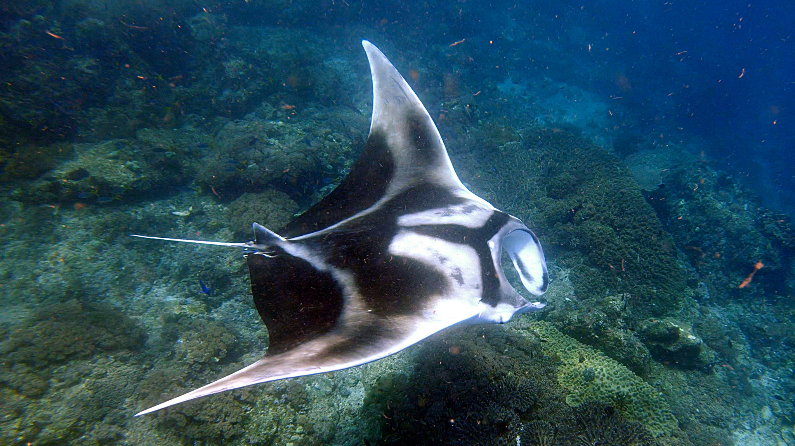

Manta común (Mobula birostris)
La manta común es una de las mantarrayas más grandes y conocidas. Se alimenta filtrando plancton en aguas tropicales y subtropicales.
Una mirada a 10 especies fascinantes de rayas y mantarrayas — fichas, imágenes y una tabla comparativa.
Los rayiformes (rayas y mantarrayas) son peces cartilaginosos emparentados con los tiburones. Presentan cuerpos aplanados y aletas pectorales fusionadas al cráneo, formando la silueta característica. En este blog encontrarás fichas breves de 10 especies diferentes, imágenes y una tabla comparativa para ver sus diferencias rápidamente.
La manta común es una de las mantarrayas más grandes y conocidas. Se alimenta filtrando plancton en aguas tropicales y subtropicales.
También conocida como manta reef, es más sedentaria que la manta común y frecuenta zonas de arrecife donde se alimenta y realiza vuelos acrobáticos.
Raya de gran envergadura, frecuente en arrecifes y lagunas tropicales. Se alimenta de moluscos y crustáceos que encuentra en el fondo.
De aleta pectoral amplia y cuerpo elegante, la raya águila habita aguas templadas y costeras; suele alimentarse en bancos arenosos.
También conocida como raya moteada o raya de cola corta; vive en aguas poco profundas de arrecife y presenta patrones llamativos en el dorso.
Presente en el Mediterráneo y el Atlántico este, esta especie posee una o varias espinas en la cola con veneno defensivo.
Variante de gran tamaño de la manta común; ejemplares de gran envergadura han sido registrados en aguas abiertas, alimentándose de grandes concentraciones de plancton.

Capaz de generar descargas eléctricas para aturdir presas y defenderse. Habita fondos arenosos y fangosos en zonas costeras.
Con forma intermedia entre tiburón y raya (conocidas como rayas guitarra), habita fondos costeros y a menudo se entierra parcialmente en la arena.
Pequeña y de hábitos bentónicos, se encuentra en aguas someras cerca de costas rocosas y arenas; su nombre común refiere a la forma de su hocico.
| Especie | Tamaño aprox. | Alimentación | Hábitat |
|---|---|---|---|
| Manta común | 4–7 m (envergadura) | Filtrador (plancton) | Tropical/subtropical, pelágico |
| Manta leopardo | 3–5 m | Filtrador | Arrecifes, zonas costeras |
| Raya toro | 1.5–2.5 m | Moluscos, crustáceos | Arrecifes, lagunas |
| Raya águila | 1–2 m | Peces y crustáceos | Costas y plataformas |
| Raya cebra | 0.5–1 m | Invertebrados bentónicos | Arrecifes someros |
| Raya espinosa | 0.7–2 m | Peces e invertebrados | Mediterráneo y Atlántico |
| Manta gigante | 6–9 m | Filtrador | Pelágico |
| Raya eléctrica | 0.3–1 m | Peces y crustáceos | Fondos arenosos/substrato |
| Raya tapiroides | 0.6–1.8 m | Invertebrados bentónicos | Costas, fondos arenosos |
| Raya nariz de boquerón | 0.4–0.9 m | Invertebrados | Somero, costas rocosas |